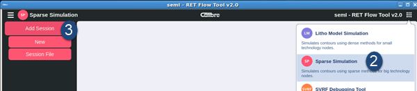

Create a new Sparse session by using existing
models, or load a previously saved session.
Procedure
- Open the
Calibre RFT v2.0 GUI.
- Click the
modal selection button in the upper right corner (red box in the
figure). Choose Sparse Simulation as the
session type.
Figure 1. Open
Sparse Simulation Session
- Hover your
cursor over Add Session. Choose one of the
following options:
New —
If you do not have a saved session file, choose this option. The
GUI automatically expands the Process Configuration panel on the
right.
Continue with the task, “Configuring the Sparse Process Management Section”.
Session File —
If you have a previously-saved session file from Calibre RFT Flow Tool
v2.0, choose this option to navigate to and load it.